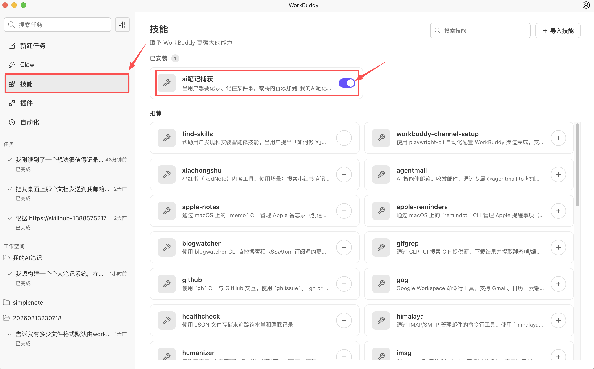
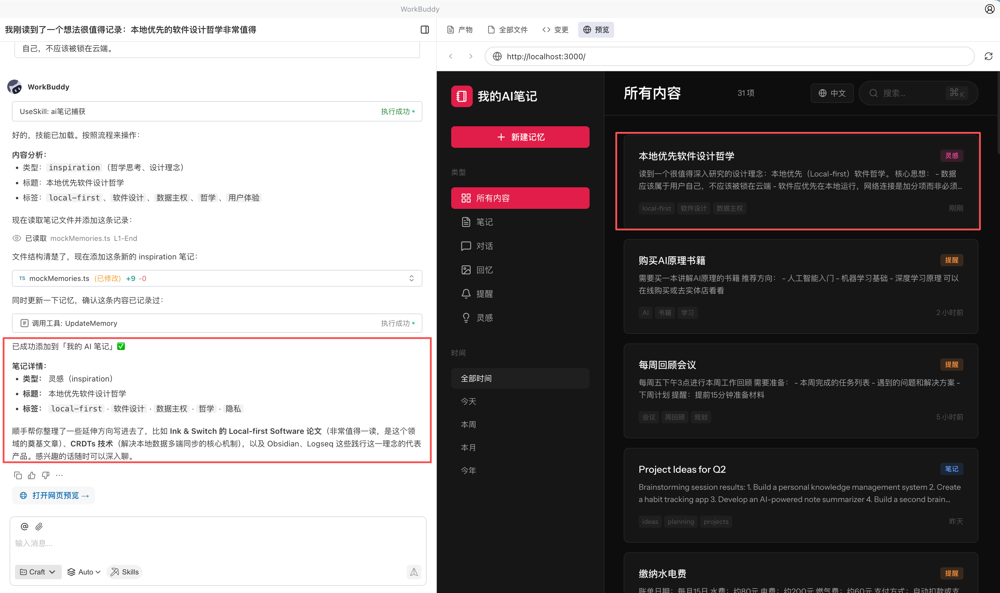
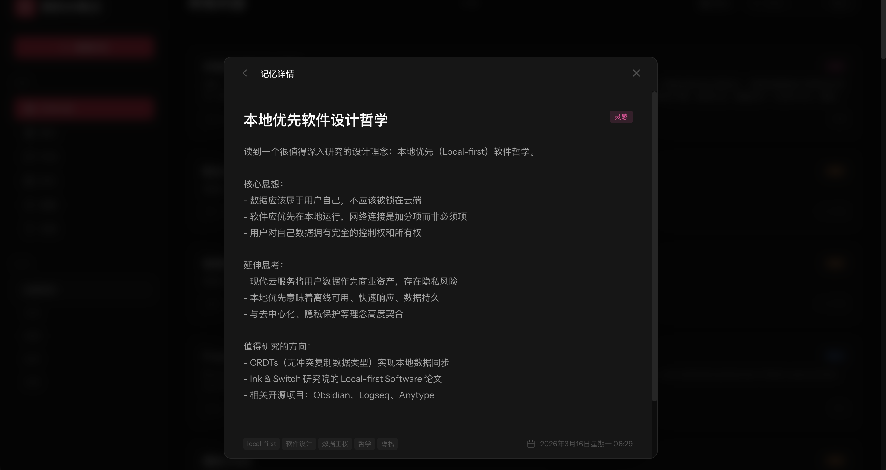

实践八：自我进化—创建自己的Skills（技能）
一、文档说明
本文介绍如何借助 WorkBuddy 创建自定义 Skill，将重复出现的个人工作习惯、知识处理方式和任务逻辑沉淀为可复用能力。
二、适用场景
- 希望把固定流程沉淀为长期可复用的能力。
- 希望让
AI在任意对话中自动识别某类意图并执行对应动作。 - 希望将个人笔记、灵感收集、知识整理流程产品化。
三、案例说明
基于前文提到的笔记应用场景，可以通过自定义 Skill 让系统自动识别用户的记录意图，并完成整理与保存，而不仅仅是普通的文本记录。
四、创建方式
在对话框中直接说明你想要的能力、触发方式和输出结果。
示例指令：
请帮我创建一个用于记录灵感的自定义
Skill。当我输入灵感、想法或待验证创意时，自动识别内容类型，整理成结构化记录，并保存到指定目录。
执行完成后，打开技能栏，在已安装目录下即可查看新创建的 Skill。

五、使用效果
创建完成后，可在任意对话中直接使用自然语言触发该能力。
示例指令：
记一条灵感：做一个能自动整理会议纪要并同步到知识库的工具。
WorkBuddy 一般会自动完成以下动作：
- 识别这是一条灵感类内容。
- 将内容整理为结构化记录。
- 保存到指定位置，并反馈记录结果。


六、使用建议
- 先定义单一能力：首个自定义
Skill建议只解决一个明确问题。 - 把触发条件说清楚：例如何时触发、写入哪里、输出什么结果。
- 从高频动作开始：越高频的重复操作，越值得沉淀成
Skill。